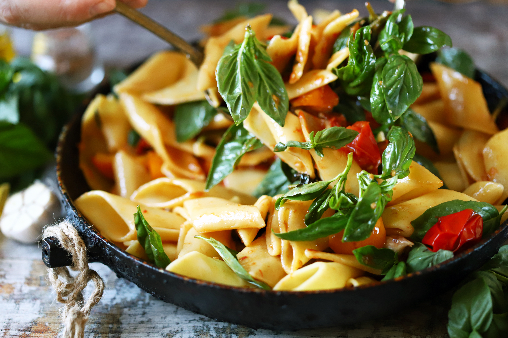
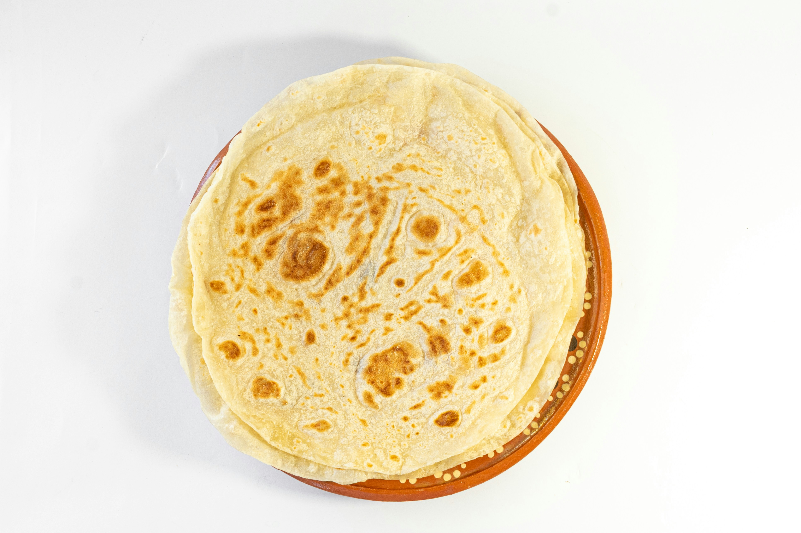

About Diana's Kitchen
Hello!
I'm Diana Ruiz, and I've been cooking mostly from recipes and haven't improved much. I'd still call myself a beginner.
But I have the passion: I love eating flavorful food, and seeing a well-plated meal brings me a sense
of happiness.
Cooking used to be a chore, but it has transformed into a time to experiment and relax. I think a basic knowledge of cooking techniques, flavors, and working slowly will be essential to improving.



This journal is just getting started. I'll add more content as I learn. So come by from time to time. Thanks for stopping by.
-Diana